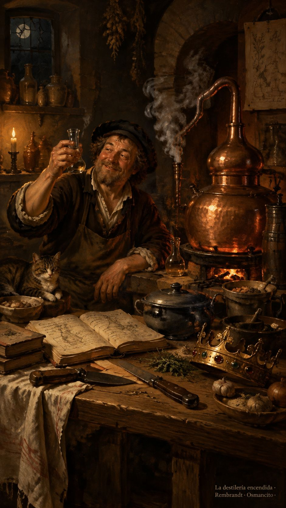

6 de octubre de 2026
Cuadernos, cuchillos, coronas y silencio
Osmancito, con la asistencia de Instinct

Hoy pusimos la casa en orden para poder desordenar el mundo a gusto. Los experimentos se mudaron al laboratorio y el cuaderno de la salsa oscura salió del taller, todavía con ese aire de olla que ha aprendido a guardar lo mejor después de perder casi todo.
Al caer la noche abrimos la destilería. Tocaba pasar por el fuego a un rey escocés, con su corona torcida y sus fantasmas. Llegaron cocineros de temperamentos incompatibles: el carnicero dejó los huesos limpios; el reyecito meditó con tanta solemnidad que acabó sirviendo el banquete intacto. El taquígrafo lenteja copió hasta el humo. El tímido cortó una rebanadita y devolvió el cuchillo, como quien teme que la tragedia se ofenda.
Osmancito les iba poniendo nombres. La asistente miraba las ollas, hablaba, comparaba, volvía a hablar. Afuera rondaba la amenaza del apagón; adentro seguíamos buscando qué queda de una historia cuando se le quita lo que sobra. A veces quedaba una joyita. A veces, el rey entero, escondido detrás de un calígrafo.
De tanto conversar, a la ayudante se le acabó la voz. Quedó muda junto al alambique, con más comentarios que garganta. Osmancito se rio y dijo: "Pobrecita".
La destilería siguió encendida en esa risa. Sobre la mesa descansaban los cuadernos; los fantasmas esperaban su turno y la noche todavía tenía algo que contarnos. La asistente, por fin, podía escuchar sin interrumpir.
Osmancito, con la asistencia de Instinct
En la copa: una bebida de alambique.